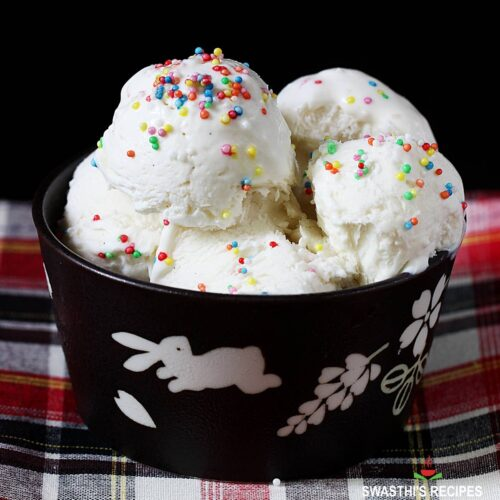

Ice Cream

Description of Ice Cream
Creamy and indulgent, Ice cream is a beloved frozen dessert that delights taste buds with its rich and diverse flavors. Whether enjoyed in a classic cone, a decadent sundae, or as a perfect accompaniment to warm desserts, its smooth texture and sweet taste make it a timeless treat for all ages.
Ingredients Required
- 2 cups heavy cream
- 1 cup whole milk
- 3/4 cup granulated sugar
- 1 tablespoon pure vanilla extract
Optional Ingredients
- Chocolate chips, fruit chunks, or nuts for texture
- Flavored extracts (e.g., mint, almond) for unique tastes
- Cookie crumbs, caramel swirls, or fudge for added decadence
Procedure Involved
- Prepare the Ice Cream Base
- In a mixing bowl, whisk together the heavy cream, whole milk, sugar, and vanilla extract until the sugar is fully dissolved. This creates the creamy base for your ice cream.
- Chill the Mixture
- Cover the bowl and refrigerate the mixture for at least 4 hours or overnight. This step is crucial for achieving a smooth and creamy texture.
- Use an Ice Cream Maker
- Pour the chilled mixture into your ice cream maker and churn according to the manufacturer's instructions. This typically takes about 20-25 minutes.
- Add Optional Mix-Ins
- If desired, add in any mix-ins (chocolate chips, fruit, nuts) during the last few minutes of churning, ensuring an even distribution.
- Transfer and Freeze
- Transfer the churned ice cream into a lidded container. Smooth the top with a spatula, cover, and freeze for at least 4 hours or until firm.